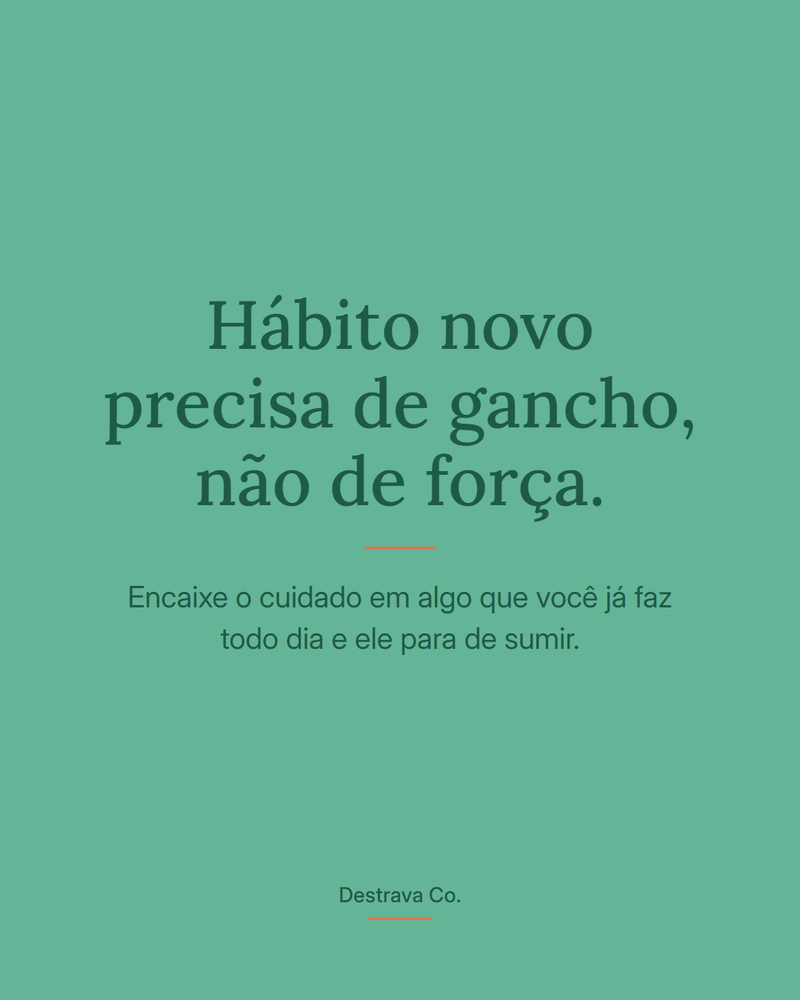
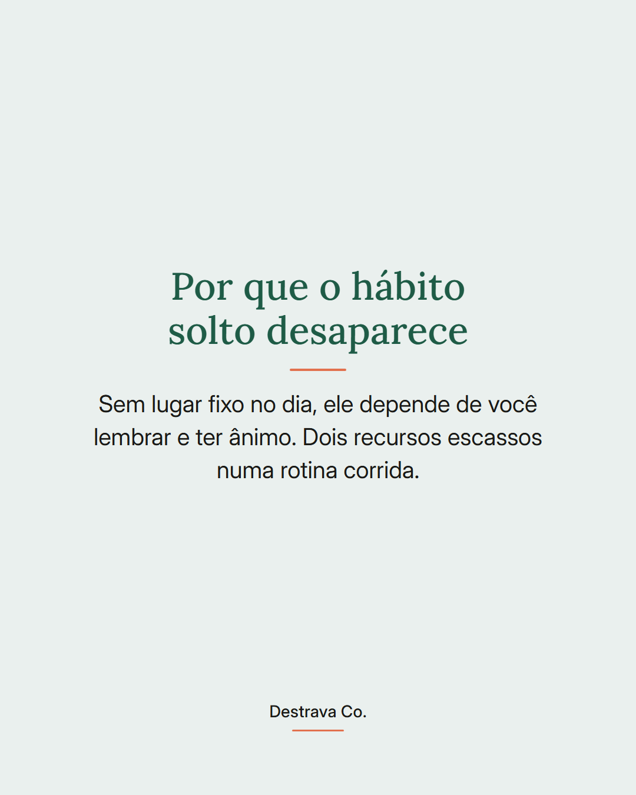
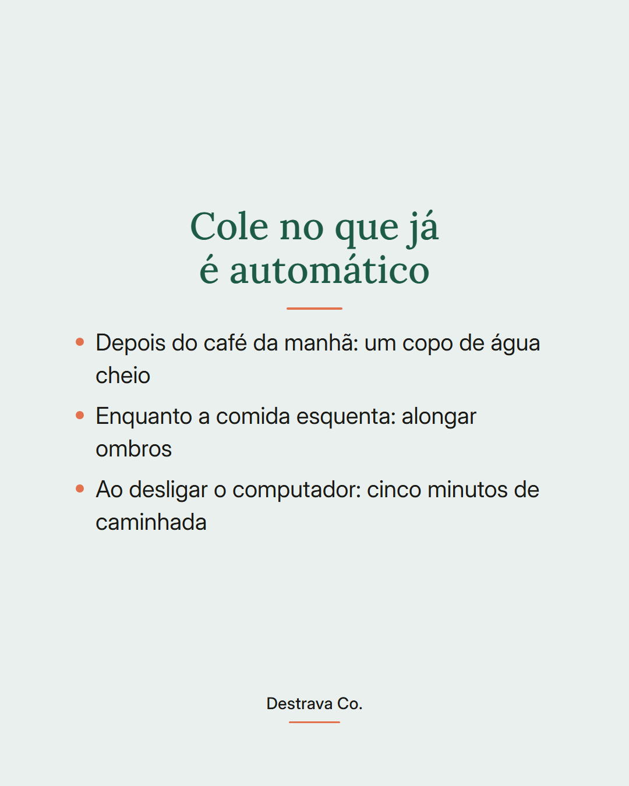
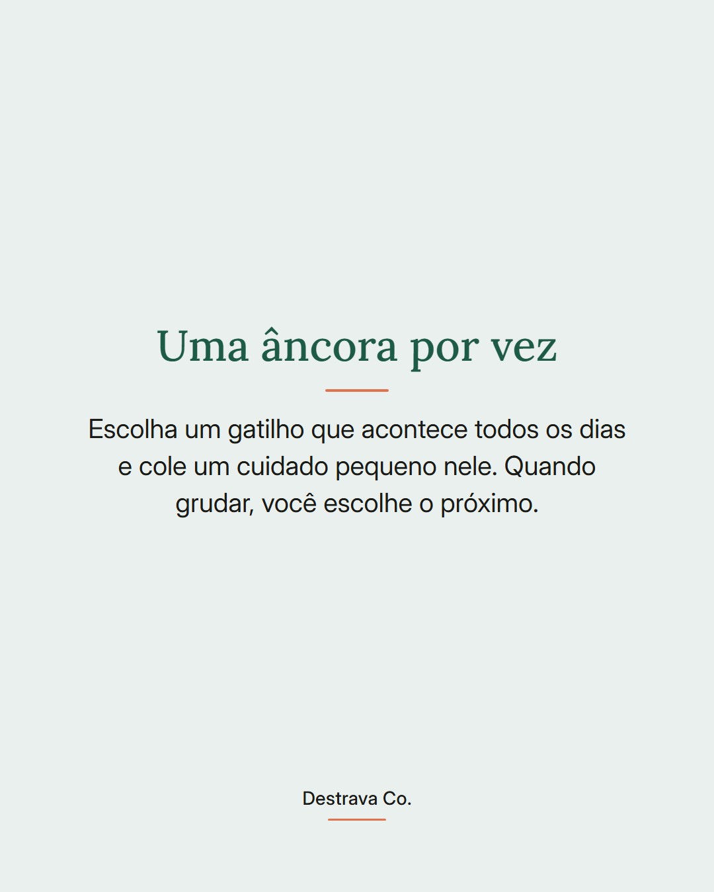
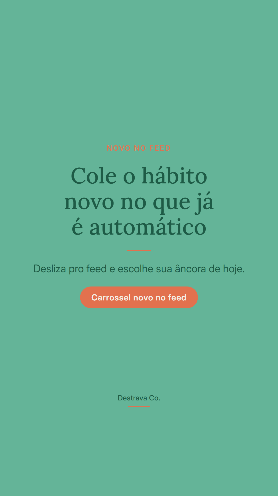

Hábito que depende de lembrar é hábito que some.
O que sustenta cuidado numa rotina corrida não é força de vontade, é lugar fixo no dia. Você pega um gatilho que já acontece sozinho e cola um passo pequeno nele.
Café da manhã puxa o copo de água. Comida esquentando puxa o alongamento de ombros. Computador desligando puxa a caminhada curta.
Começa com uma âncora só. Quando ela grudar, o resto fica mais simples, porque você não está mais decidindo tudo do zero todo dia.
Salva pra escolher sua âncora amanhã e manda pra uma amiga que vive recomeçando. Se quiser fazer isso com um passo por dia, o Destrava 21 está no meu perfil.